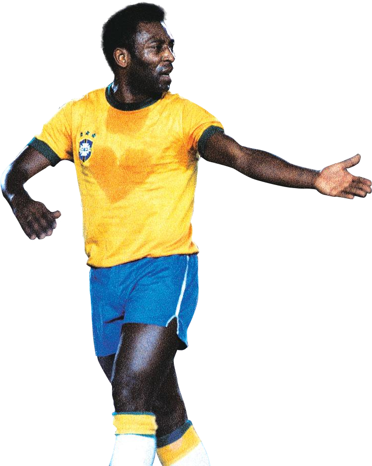

فوتبال (به انگلیسی: Football) یک ورزش تیمی و محبوبترین ورزش در بیشتر کشورهای جهان است. فوتبال را دو تیم
یازدهنفره متشکل از بازیکنان فوتبال با یک توپ فوتبال بر روی چمن طبیعی یا مصنوعی با هدف گلزدن انجام میدهند.
یازده بازیکن هر تیم شامل چند مهاجم، هافبک، مدافع و یک دروازهبان میشوند که توسط سرمربی در زمین چیده میشوند
و مانند یک سیستم عمل میکنند که سیستم فوتبال نامیده میشود. امروزه بیش از ۲۵۰ میلیون فوتبالیست در بیش از ۲۰۰
کشور وجود دارد.
قدمت فوتبال به چندین سدهٔ پیش از میلاد و به چین بازمیگردد که به تدریج در یونان و روم نیز رواج مییابد.
فوتبال مدرن امروزی نیز در سال ۱۸۶۶ در مدارس انگلستان شکلگرفت و به تدریج گسترهٔ پراکندگی آن همهٔ جهان را زیر
پوشش خود قرارداد. با شکلگیری سازمان فیفا در سال ۱۹۰۴ و ایجاد رقابت جام جهانی فوتبال، این ورزش بسیار
گستردهتر شد.
طول زمین فوتبال ۹۰ تا ۱۲۰ متر و عرض آن ۴۵ تا ۹۰ متر است. مسابقهٔ فوتبال در دو نیمهٔ ۴۵دقیقهای انجام میگیرد
و در بازیهای حذفی و رفت و برگشتی، گاهی، در صورت تساویِ نتیجه، وقتهای اضافه و پنالتی نیز به آن افزوده
میشود. فوتبال ضوابطی دارد که قوانین فوتبال نامیده میشوند و نمیتوان برخلاف آنها عمل کرد. سازمان فیفا،
علاوه بر فوتبال، نهاد رسمی ورزشهای فوتسال و فوتبال ساحلی نیز هست و کنفدراسیونهای قارهایِ یوفا،
اِیاِفسی، سیاِیاِف، کونکاکاف، کونمبول و اُافسی از زیرشاخههای فیفا هستند.
جام جهانی فوتبال از بزرگترین رویدادهای ورزشی جهان است که هر چهار سال یک بار در یکی از کشورهای جهان روی
میدهد. علاوه بر این، مسابقات بینالمللی دیگری مانند بازیهای المپیک تابستانی، جام کنفدراسیونها، جام
باشگاههای جهان، جام ملتهای اروپا و لیگ قهرمانان اروپا نیز رایج است. لیگهای متعددی ازجمله لا لیگا و لیگ
برتر انگلستان در کشورهای مختلف بهوجود آمدهاند که نوعی مسابقات داخلی محسوب میشوند. فوتبال بانوان نیز از
اواخر سدهٔ نوزدهم میلادی به راه افتاد. فیفا ادعا میکند که وظیفهٔ محافظت بازیکنان از دوپینگ را بهخوبی انجام
میدهد و فوتبال از دوپینگ پاک است. در سال ۲۰۰۴، فیفا یک منشور اخلاقی برای اجرای بازیهای جوانمردانه بهتصویب
رساند. اما در سال ۲۰۰۶، این منشور بازنگری شد و منجر به تشکیل نهاد قضایی سوم فیفا گردید
امروز میخواهیم 5 تن از برترین بازیکنان تاریخ این ورزش محبوب را نام برده و زندگی آنها را بررسی کنیم
1. Lionel Messi 2. Diego Maradona 3. Cristiano Ronaldo 4. Edson Arantes do Nascimento(Pelé) 5. Zinedine Zidane
1. Lionel Messi
بیوگرافی لیونل مسی
لیونل مسی یک فوتبالیست آرژانتینی است که به طور گسترده به عنوان یکی از بزرگترین بازیکنان نسل مدرن
شناخته می شود. او برای باشگاه اینتر میامی و تیم ملی آرژانتین بازی می کند. او پنج بار (2009–12 و
2015) برنده بهترین بازیکن سال فیفا شده است. او اغلب به عنوان جانشین دیگو مارادونا به دلیل رکورد
گلزنی و توانایی در دریبل زدن حریفان گذشته شناخته می شود.
لیونل مسی در 24 ژوئن 1987 در روزاریو آرژانتین در خانواده ای کارگری به دنیا آمد. پدرش کارگر کارخانه
فولاد و مادرش نظافتچی بود.
او از کودکی شروع به بازی کرد و استعدادش به زودی آشکار شد. با این حال، در سن 11 سالگی، مسی به کمبود
هورمون رشد (GHD) تشخیص داده شد. این وضعیتی بود که رشد را متوقف می کرد و نیاز به درمان پزشکی گران
قیمت از جمله استفاده از داروی هورمون رشد انسانی داشت.
باشگاه محلی او، ریور پلاته، علاقه مند به جذب مسی بود، اما نمی خواست هزینه درمان او را بپردازد. با
این حال، مسی با بارسلونا محاکمه شد و کارلس رکساچ، مربی، تحت تأثیر قرار گرفت - به مسی پیشنهاد
قراردادی (که روی یک دستمال کاغذی نوشته شده بود!) که شامل پرداخت هزینه درمان مسی در اسپانیا نیز می
شد. مسی به همراه پدرش به بارسلونا نقل مکان کرد و به عضویت آکادمی جوانان بارسلونا درآمد.
اطلاعات شخصی
نام کامل : لیونل آندرس مسی زادروز : ۲۴ ژوئن ۱۹۸۷ (۳۶ سال)
زادگاه : روزاریو، آرژانتین
قد : ۱٫۷۰ متر (۵ فوت ۷ اینچ)
پست : مهاجم، هافبک هجومی
ملیت : آرژانتینی
باشگاه ها
بارسلونا پاری سن-ژرمن اینتر میامی
2. Diego Maradona
بیوگرافی مارادونا
دیگو مارادونا (Diego Maradona) فوتبالیست مشهور آرژانتینی بود که در سال 1960 به دنیا آمده و در 2020
از دنیا رفت. دیگو مارادونا بازیکن اسبق باشگاههای بوکاجونیورز، بارسلونا، ناپولی و سویا به حساب
میرود و کسب عناوین قهرمانی متعدد از جمله جام جهانی، سری آ و جام یوفا در کارنامهاش دیده میشود.
اختصاصی طرفداری| دیگو مارادونا در شرایطی که همواره از اضافه وزن و سومصرف مواد رنج میبرد، بعد از
چندین بار عارضه قلبی و بستری در بیمارستان، در 60 سالگی تسلیم مرگ شد و در خاک کشورش از دنیا رفت.دیگو
آرماندو مارادونا 63 سال پیش در ویا فیوریتو که یکی از شهرهای اطراف بوئنس آیرس است، به دنیا آمد. او
فرزند هشتم خانواده دیگو سینیور و دونیا توتا بود. مارادو، یکی از القاب دیگو، در خانهای محقر ولی
صمیمی بزرگ شد. او وقتی 3 ساله بود، اولین توپ فوتبالش را به عنوان یک هدیه دریافت کرد و از همان زمان
عاشق فوتبال شد.
دیگو صبح تا شب مشغول فوتبال در کوچه و خیابان دیده میشد و فقط تاریکی بود که او را به خانه میکشاند.
در آن زمان به خاطر موهای پرپشتی که دیگو داشت، او را ال پلوسا به معنای موفرفری صدا میکردند.دیگو وقتی
10 ساله بود به تیم پایه آرژانتینیوس جونیورز به نام لوس سبوئیتاس پیوست. او بعد از آنکه استعداد بالای
خود را از چنین سن پایینی بروز داد، به لوس سبایوس کمک کرد در 136 بازی بدون شکست باقی بماند. دیگو 10
روز قبل از آنکه تولد 16 سالگیاش را جشن بگیرد، برای تیم اصلی آرژانتینیوس هم به میدان رفته بود. او که
با پیراهن شماره 16 بازی تبدیل به جوانترین بازیکن تاریخ لیگ آرژانتین شد.
دیگو در اولین بازیاش و در حالی که به عنوان بازیکن تعویضی وارد زمین شده بود، چند دقیقه بعد از حضور
به خوان دومینگو کابرئا، هافبک مشهور آن زمان، لایی زد و این حرکت به یکی امضاهایش بدل شد. او 2 هفته
بعد از تولد 16 سالگیاش، اولین گل دوران حرفهایاش را وارد دروازه مارپلاتنزه شد. شماره 10 به مدت 11
سال از 1969 تا 1981 عضوی از آرژانتینیوس جونیوز و تیمهای پایه آن بود و در دوران حضورش در تیم اصلی،
در 166 بازی، 116 گل برای آنها زد.
اطلاعات شخصی
نام کامل : دیگو آرماندو مارادونا
زادروز : 30 اکتبر 1960 (8 آبان 1339)
زادگاه : ویا فیوریتو - آرژانتین
قد : 167 سانتی متر
پست : هافبک تهاجمی - مهاجم سایه
ملیت : آرژانتینی
باشگاه ها
بوکاجونیورز بارسلونا ناپولی سویا
3. Cristiano Ronaldo
بیوگرافی رونالدو
کریستیانو رونالدو در ۵ فوریه سال ۱۹۸۵ یا همون ۱۶ بهمن سال ۱۳۶۳در بین خانواده ای فقیر متولد
شد.درکودکی بخاطر علاقه ی شدید به پاتریک کلایورت،با نام کلایورت نام برده می شد.رونالدو خودش در مورد
علاقه اش به فوتبال در کودکی می گوید به قدری عاشق فوتبال بوده که اگر توپی رو هم در اختیار نداشته با
در هم کردن لنگه جوراب هایش خود رو سرگرم می کرده.ماریا دوس سانتوس معلم دوران ابتدایی رونالدو در مورد
علاقه ی شدید رونالدو به فوتبال می گوید:«به یاد دارم کریس هر وقت اوقات آزادی پیدا می کرد به فوتبال می
پرداخت.»کریستیانو رونالدو فوتبالش را در نوجوانی در تیم آندورینها آغاز کرد. بعد از دو سال به ناسیونال
پیوست و پس از آن، به باشگاه اسپورتینگ لیسبون ملحق شد. رونالدو در این تیم، نظر الکس فرگوسن سرمربی وقت
منچستر یونایتد را به خود جلب کرد و در سال ۲۰۰۳ با قراردادی به ارزش ۱۳٫۲۴ میلیون پوند (۱۶ میلیون
یورو) به منچستر یونایتد پیوست. کریستیانو رونالدو نخستین جامش در منچستر یونایتد را با قهرمانی در جام
حذفی سال ۲۰۰۴ به دست آورد.رونالدو تا سال ۲۰۰۹ با منچستریها همبازی بود و چندین بار جام حذفی و لیگ
برتر انگلستان را با آنان فتحکرد.
رئال مادرید در تابستان سال ۲۰۰۹ با قراردادی ۹۴ میلیون یورویی، با کریس به توافق رسید و رکورد
گرانقیمتترین فوتبالیست جهان را شکست.
بزرگترین موفقیت کریستیانو رونالدو در باشگاه مادریدی جدید خود، فتح لا لیگا و همچنین جام باشگاههای
اروپا بوده است.
اطلاعات شخصی
نام کامل : کریستیانو رونالدو دوس سانتوس آویرو
زادروز : ۵ فوریهٔ ۱۹۸۵ (۳۸ سال)
زادگاه : فونشال، مادیرا، پرتغال
قد : ۱٫۸۷ متر
پست : مهاجم
ملیت : پرتقالی
باشگاه ها
اسپورتینگ منچستر یونایتد رئال مادرید یوونتوس النصر
4. Edson Arantes do Nascimento(Pelé)
پله بازیکن سابق فوتبال در پست مهاجم است. او یکی از بزرگترین بازیکنان تمام ادوار تلقی میشود که از
سوی فیفا لقب «برترین» را گرفته است. همچنین یکی از موفقترین و محبوبترین چهرههای ورزشی قرن بیستم
بهشمار میرود.
به گزارش خبرنگار ایمنا، ادسون آرانتس دو ناسیمنتو در ۲۳ اکتبر ۱۹۴۰ در برزیل متولد شد. وی که با نام
«پله» شناخته میشود، بازیکن سابق فوتبال در پست مهاجم است.
پله یکی از بزرگترین بازیکنان تمام ادوار تلقی میشود که از سوی فیفا لقب «برترین» را گرفته است. او
یکی از موفقترین و محبوبترین چهرههای ورزشی قرن بیستم است که کمیته بینالمللی المپیک در سال ۱۹۹۹ از
وی بهعنوان «ورزشکار قرن» یاد کرد و نامش از سوی مجله تایم در فهرست ۱۰۰ شخصیت برجسته قرن بیستم قرار
گرفت.
پله در سال ۲۰۰۰ از سوی فدراسیون بینالمللی تاریخ و آمار فوتبال (IFFHS) بهعنوان «بازیکن برتر جهان»
انتخاب شد و یکی از دو برنده مشترک بازیکن قرن فیفا بود. وی در دوران بازیکنی خود، سه جامجهانی را کسب
کرد و رکوردهای بسیاری، ازجمله بیشترین گل در تاریخ فوتبال را شکست.ادسون آرانتس دو ناسیمنتو ملقب به
پله (Pelé) روز ۱ آبان ۱۳۱۹ در شهر کوراسائویس کشور برزیل بهعنوان فرزند اول خانواده بهدنیا آمد.
ماریا، خواهرش، متولد سال ۱۳۲۱ و ژکا، برادرش، متولد ۱۳۲۸ است. پدرش دوندینیو فوتبالیست آماتور و مادرش
خانهدار بود.
پله فوتبال را از سال ۱۹۵۰ در ۱۰سالگی شروع کرد و خیلی زود در سال ۱۹۵۸ با اینکه ۱۸ سال بیشتر نداشت، در
جامجهانی سوئد بهعنوان جوانترین بازیکن برزیلی شناخته شد و توانست با گلزنی بر افتخارات خویش
بیفزاید.
وی ضمن داشتن مهارت بازی بهعنوان هافبک یا مهاجم، مهارت کامل بازی با هر دو پا را داشت و تمامکنندهای
قهار، دریبلزنی بینظیر و پاسوری بهیادماندنی بود و حتی بهعنوان یک فوروارد، تکلزن قهاری بود. سرعت،
قدرت و دقت پله در شوتزنی از معروفترین ویژگیهای اوست.
اطلاعات شخصی
نام کامل : Edson Arantes do Nascimento(Pelé)
زادروز : ۲۳ اکتبر ۱۹۴۰
زادگاه : ترس کوراسویس، میناز ژرایس، برزیل
قد : ۱٫۷۳ متر (۵ فوت ۸ اینچ)
پست :
مهاجم
هافبک
ملیت : برزیلی
باشگاه ها
سانتوس نیویورک کاسموس

5. Zinedine Zidane
زین الدین زیدان (Zinedine Zidane) فوتبالیست و سرمربی مشهور فرانسوی است که در سال 1972 به دنیا آمده
و در حال حاضر 50 ساله است. زین الدین زیدان بازیکن اسبق باشگاههای بوردو، یوونتوس و رئال مادرید به
حساب میرود و در رئال مادرید هم سرمربیگری کرده است. زیزو توانسته هر آنچه از عناوین تیمی و فردی از
جمله جام جهانی، یورو، لیگ قهرمانان و توپ طلا که یک فوتبالیست به دنبال آنها است را به دست آورد و در
دنیای مربیگری هم فوق العاده موفق بوده و به قهرمانیهای متعدد در چمپیونزلیگ و لالیگا دست پیدا است.
اختصاصی طرفداری| زین الدین زیدان بعد از آنکه سمت هدایت رئال مادرید را در 30 ژوئن 2021 ترک کرده، دیگر
مربیگری نکرده است، ولی نامش حول و حوش تیمهای بزرگی چون منچستریونایتد، پاریسن ژرمن، یوونتوس و ملی
فرانسه بارها و بارها مطرح شده و باید دید با کدام باشگاه یا تیم ملی به دنیای مربیگری باز خواهد
گشت.زیزو فرزند سمیل و ملیکا زیدان است که اصلیتی الجزایری دارند. او در La Castellane که منطقهای
پرجرم و جنایت در شهر مارسی به حساب میرود، به دنیا آمد و بزرگ شد. در این منطقه که مهاجرنشین تلقی
میشود، بیکاری و آمار خودکشی هم بسیار بالا است.
پدر زین الدین، نگهبان شبانه یک فروشگاه بود و برای سیر کردن شکم 6 عضو دیگر خانواده همیشه سخت کار
میکرد. مادرش، ملیکا، هم به عنوان اداره کننده خانه در منازل فرانسوی به کار مشغول بود. زیدان که 3
برادر به نام مجید، فرید و نورالدین هم دارد، از همان ابتدا طعم فقر و نداری در زندگی را چشید و با خود
عهد کرد به این شرایط خانوادهاش خاتمه دهد. او که یک برادر به نام لیلا هم دارد، در 5 سالگی با فوتبال
آشنا شد و همیشه با دوستانش در محله مشغول بازی دیده میشد.
در آن دوران، مهاجران آفریقایی هیچ امیدی به دنبال کردن فوتبال در فرانسه نداشتند. در واقع شاید بتوان
ادعا کرد زین الدین زیدان توانست به استمرار و سختکوشیاش، الگویی برای سایرین شود. برای دوستان زیزو،
فوتبال فقط سرگرمی بود، ولی برای او فرصتی تلقی میشد که میتواند به فقر خانوادگی خاتمه دهد.
اطلاعات شخصی
نام کامل : زین الدین یزید زیدان
زادروز : 23 ژوئن 1972 (2 تیر 1351)
زادگاه : مارسی، فرانسه
قد : 185 سانتی متر
پست : هافبک تهاجمی؛ هافبک چپ
ملیت : فرانسوی